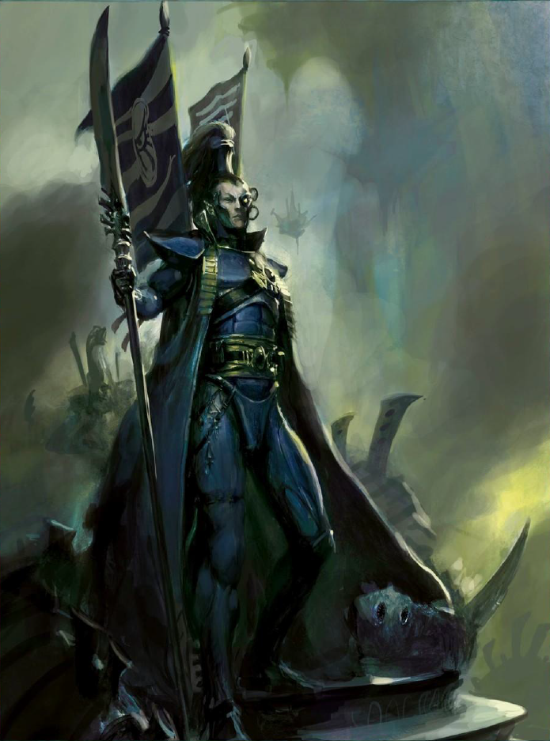

Menu de navigation :
CV (page 2)
Données personelles
Les cours
Loisirs
Données personelles
Nom : CAULET
Prénom : Pierre
Age : 18
Les cours
Informatique :
Cours et TD
Mathématiques :
...
Emploi du temps
Loisirs
J'adore le tennis. J'ai également longtemps collectionné des Warhammers (d'où l'image ci contre). 